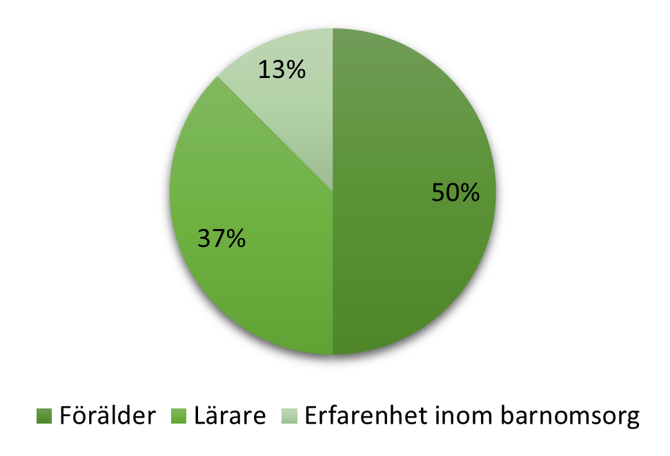
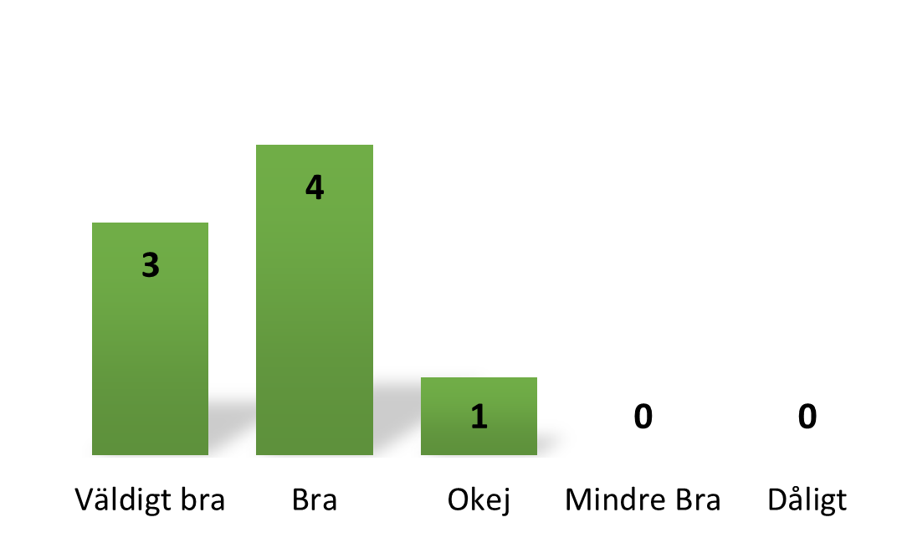
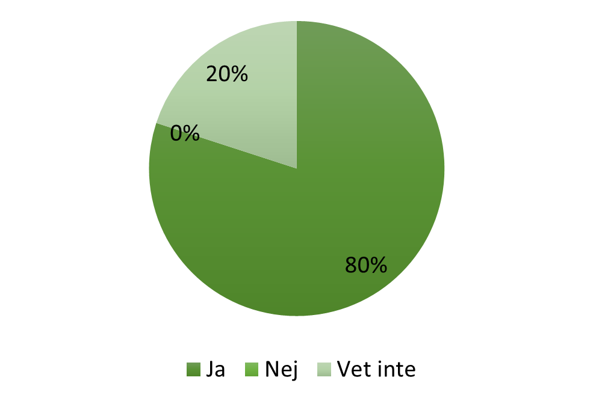
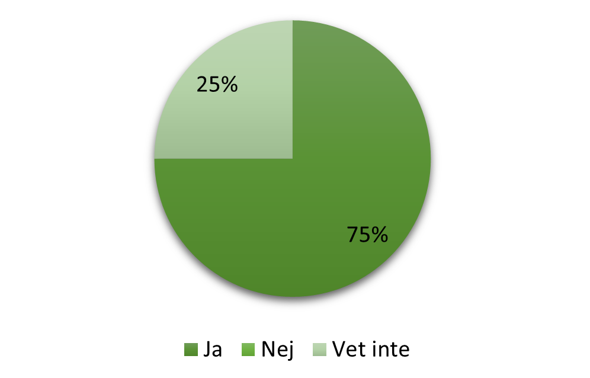
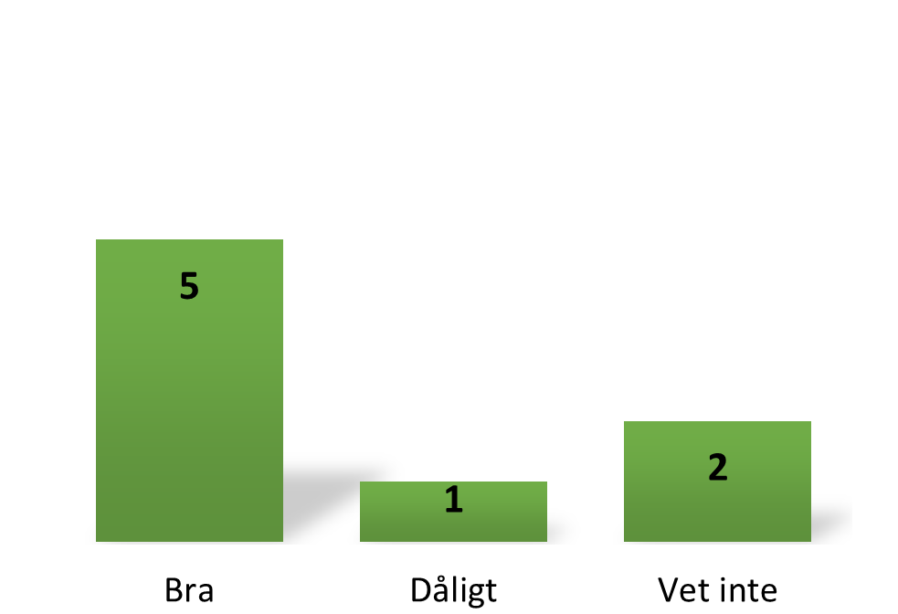
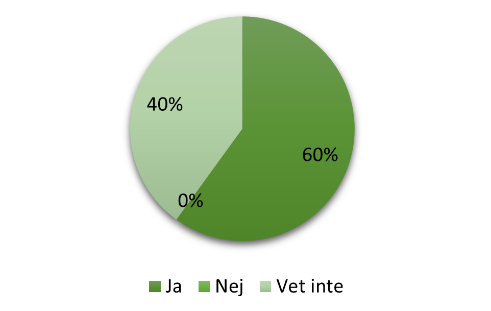

Resultat av datainsamling
1. Vilken roll gör dig passande till att svara på detta formulär?

2. Vad tycker du om kalenderns utseende?

3. Om svaret på 1a frågan var lärare/erfarenhet inom barnomsorg, kan du se dig implementera denna typ av kalender i arbetsplanen?

Kommentarer:
"Spännande och roligt koncept, jag tror det hade fungerat som ett verktyg."
"Mina elever är alltid ute efter utmaningar så denna typen av kalender hade passat bra."
"Bra med färdiga förslag, tidsbesparing men också att jag kan välja eget material."
4. Om svaret på fråga 1 var förälder, tror du dina barn hade uppskattat denna typen av aktivitet?

Kommentar:
"Barnen älskar utmaningar så de hade absolut funkar på mina barn."
5. Vi har lagt till en sida där kalendern kan ändras, vad tycker du som lärare om den funktionen?
Kommentarer:
"Då kan man lägga in egna händelser och inte känner sig låst."
"Detta låter bra då man har olika scheman och aktiviteter inplanerade. Det är bra att man kan ändra så man ändå kan följa kalendern."
"Bra med alternativ."
"Bra att man kan styra över upplägget."
6. Kalendern är tänkt att ha en funktion där läraren kan skicka direkt meddelande till föräldrar om händelser/ saker eleverna måste ha med sig. Hur är din tanke om detta?

Kommentarer:
"Bra att det finns en sådan funktion. Sen kanske den inte alltid används då det finns andra kanaler att kontakta föräldrar."
"Kan fungera men kan också bli en informations kanal för mycket."
"Det finns andra kanaler för föräldrakontakt. Skulle nog upplevas som rörigt."
7. Skulle du som lärare använda dig av feedbacksystemet för att hjälpa oss vidareutveckla kalendern?

Kommentarer:
"Det är bra att man kan ge feedback men även ge egna förslag på utmaningar och övningar."
"Alltid bra att kunna påverka innehåll."